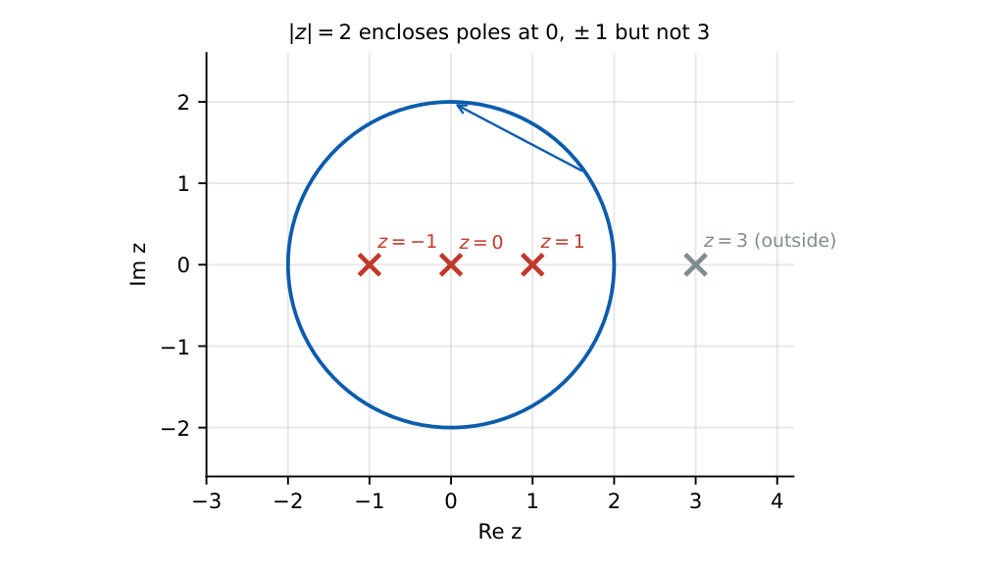

Complex Variables
In this chapter
Cauchy–Riemann equations, harmonic conjugates, Cauchy’s theorem and integral formula, residue evaluation at simple and higher-order poles, Laurent series and radius of convergence. Contour integrals over circles are the most frequent question.
6.1 Complex numbers
\(z=x+jy=re^{j\theta}\), \(r=|z|=\sqrt{x^2+y^2}\), \(\theta=\arg z\), \(\bar z=x-jy\), \(z\bar z=|z|^2\). Euler: \(e^{j\theta}=\cos\theta+j\sin\theta\). De Moivre: \(z^n=r^ne^{jn\theta}\); the \(n\)th roots of \(z\) are \(r^{1/n}e^{j(\theta+2\pi k)/n}\), \(k=0,\dots,n-1\). \(|z_1z_2|=|z_1||z_2|\), \(\arg(z_1z_2)=\arg z_1+\arg z_2\). \(\ln z=\ln r+j(\theta+2\pi k)\) is multi-valued. \(j^j=e^{-\pi/2}\) (principal value).
6.2 Analytic functions and the Cauchy–Riemann equations
\(f=u+jv\) is differentiable (analytic) at \(z\) if the Cauchy–Riemann (CR) equations hold with continuous partials:
\(u_x=v_y,\quad u_y=-v_x\). Then \(f'(z)=u_x+jv_x\).
Polar form: \(u_r=\frac1rv_\theta\), \(v_r=-\frac1ru_\theta\).
Both \(u\) and \(v\) are harmonic: \(u_{xx}+u_{yy}=0\). Given \(u\), a harmonic conjugate \(v\) is found by integrating the CR equations; \(f(z)\) can be built by Milne-Thomson’s method \(f'(z)=u_x(z,0)-ju_y(z,0)\).
An entire function is analytic everywhere (\(e^z,\sin z,\cos z\), polynomials). \(|z|^2\) and \(\bar z\) are nowhere analytic.
\(u=x^2-y^2\): \(u_x=2x=v_y\Rightarrow v=2xy+g(x)\); \(u_y=-2y=-v_x=-2y-g'\) gives \(g'=0\). So \(v=2xy\) and \(f=z^2\).
6.3 Complex integration
\(\int_Cf\,dz=\int f(z(t))z'(t)dt\). Basic: \(\oint_{|z-a|=r}(z-a)^n\,dz=2\pi j\) for \(n=-1\) and \(0\) for every other integer \(n\).
6.4 Cauchy’s integral theorem and formula
Theorem: \(f\) analytic inside and on a simple closed contour \(C\) \(\Rightarrow\oint_Cf\,dz=0\).
Integral formula: \(f(a)=\frac1{2\pi j}\oint_C\frac{f(z)}{z-a}dz\) for \(a\) inside \(C\); derivatives
\(f^{(n)}(a)=\frac{n!}{2\pi j}\oint_C\frac{f(z)}{(z-a)^{n+1}}dz\).
6.5 Taylor and Laurent series
Taylor: \(f(z)=\sum a_n(z-a)^n\) in a disc of analyticity. Laurent (annulus): \(f(z)=\sum_{-\infty}^{\infty}a_n(z-a)^n\), \(a_{-1}\) is the residue. Singularities at \(a\): removable (no negative powers), pole of order \(m\) (finite negative powers down to \((z-a)^{-m}\)), essential (infinitely many, e.g. \(e^{1/z}\) at \(0\)). Standard: \(\frac1{1-z}=\sum z^n\) (\(|z|<1\)), and for \(|z|>1\): \(\frac1{1-z}=-\sum_{n\ge1}z^{-n}\). The same function has different Laurent series in different annuli.
6.6 Residue theorem
Theorem: \(\oint_Cf\,dz=2\pi j\sum\Res(f,a_k)\) over the singularities inside \(C\).
Simple pole: \(\Res(f,a)=\lim_{z\to a}(z-a)f(z)\); for \(f=g/h\): \(\Res=\frac{g(a)}{h'(a)}\).
Pole of order \(m\): \(\Res(f,a)=\frac1{(m-1)!}\lim_{z\to a}\frac{d^{m-1}}{dz^{m-1}}\big[(z-a)^mf(z)\big]\).

\(\oint_{|z|=2}\frac{dz}{z^2-1}\): poles \(\pm1\) with residues \(\frac1{2z}=\pm\frac12\); sum \(=0\), so the integral is \(0\). Next \(\oint_{|z|=3}\frac{z\,dz}{(z-1)(z-2)}\): residues \(\frac{1}{1-2}=-1\) at \(1\) and \(\frac22=2\) at \(2\); total \(2\pi j(1)=2\pi j\). Finally \(\Res\big(\frac{\cos z}{z^3},0\big)\): \(\cos z/z^3=z^{-3}-\frac12z^{-1}+\cdots\), so the residue is \(-\frac12\).
6.7 Sequences, series and convergence tests
Necessary: \(a_n\to0\). Geometric \(\sum r^n\): converges iff \(|r|<1\). \(p\)-series \(\sum n^{-p}\): converges iff \(p>1\).
Ratio: \(L=\lim|a_{n+1}/a_n|\); converges if \(L<1\), diverges if \(L>1\), inconclusive if \(L=1\). Root: \(L=\lim|a_n|^{1/n}\).
Comparison and limit comparison with a known series; alternating series (Leibniz): \(a_n\) decreasing to \(0\) \(\Rightarrow\) converges. Absolute convergence implies convergence.
Power series \(\sum a_n(z-a)^n\): radius \(R=\lim\left|\frac{a_n}{a_{n+1}}\right|=\frac1{\limsup|a_n|^{1/n}}\).
(i) CR equations are necessary; sufficiency needs continuous partials. (ii) \(\oint(z-a)^{-n}dz=0\) for \(n\ne1\); only \(n=1\) gives \(2\pi j\). (iii) Include only poles inside the contour. (iv) \(a_n\to0\) does not imply convergence (harmonic series). (v) \(\sin z\) is not bounded in \(\C\).
For \(\oint f\,dz\) with \(f=g/(z-a)^{n+1}\) and \(g\) analytic use the derivative formula directly (no residue computation). For simple poles use \(g(a)/h'(a)\). Radius of convergence: ratio test on the coefficients.
6.8 GATE problems
Q1. \(|3+4j|=\) (A) 3 (B) 4 (C) 5 (D) 7.
Q2. \(\oint_{|z|=1}\frac{dz}{z}=\) (A) 0 (B) \(2\pi j\) (C) \(\pi j\) (D) \(2\pi\).
Q3. \(f=\bar z\) is (A) analytic everywhere (B) analytic nowhere (C) analytic only at 0 (D) entire.
Q4. The residue of \(\frac1{z(z-1)}\) at \(z=0\) is (A) 1 (B) \(-1\) (C) 0 (D) 2.
Answers: Q1 (C). Q2 (B). Q3 (B). Q4 (B): \(\lim z\cdot\frac1{z(z-1)}=-1\).
Q5. \(\oint_{|z|=2}\frac{dz}{z^2-1}=\) (A) \(2\pi j\) (B) \(0\) (C) \(\pi j\) (D) \(-2\pi j\).
Q6. \(\oint_{|z|=3}\frac{z\,dz}{(z-1)(z-2)}=\) (A) \(0\) (B) \(2\pi j\) (C) \(4\pi j\) (D) \(-2\pi j\).
Q7. The residue of \(\frac{\cos z}{z^3}\) at \(0\) is (A) 0 (B) \(1\) (C) \(-\frac12\) (D) \(\frac12\).
Answers: Q5 (B). Q6 (B). Q7 (C).
Q8. If \(u=x^2-y^2\) then the analytic function \(f=u+jv\) with \(v(0,0)=0\) has \(v(1,2)=\) .
Q9. Radius of convergence of \(\sum\frac{z^n}{2^n}\) is .
Q10. \(\frac1j\oint_{|z|=1}\frac{e^z}{z^3}dz=\) (two decimals).
Answers: Q8: \(v=2xy=4\). Q9: \(R=2\). Q10: \(2\pi\cdot\frac{f''(0)}{2!}=2\pi\cdot\frac12=\pi=3.14\).
Q11. Which functions are entire? (A) \(e^z\) (B) \(\bar z\) (C) \(\sin z\) (D) \(1/z\).
Answers: Q11: (A), (C).
T1. Type of singularity of \(\sin z/z\) at \(0\)? T2. Residue of \(e^{1/z}\) at \(0\)? T3. CR equations?
Answers: T1: removable. T2: \(1\). T3: \(u_x=v_y\), \(u_y=-v_x\).
- CR: \(u_x=v_y\), \(u_y=-v_x\); \(u,v\) harmonic; \(f'=u_x+jv_x\).
- \(\oint(z-a)^n=2\pi j\) only for \(n=-1\).
- Cauchy formula \(f(a)=\frac1{2\pi j}\oint\frac{f}{z-a}\) and derivatives with \(n!\).
- Residue theorem \(2\pi j\sum\Res\); simple pole \(g(a)/h'(a)\); order \(m\) via derivative.
- Ratio test for \(R\); geometric, \(p\)-series, alternating series tests.